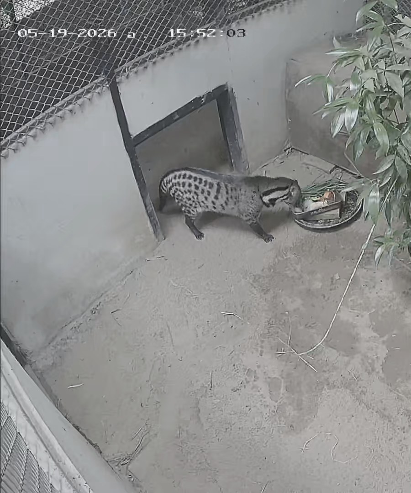
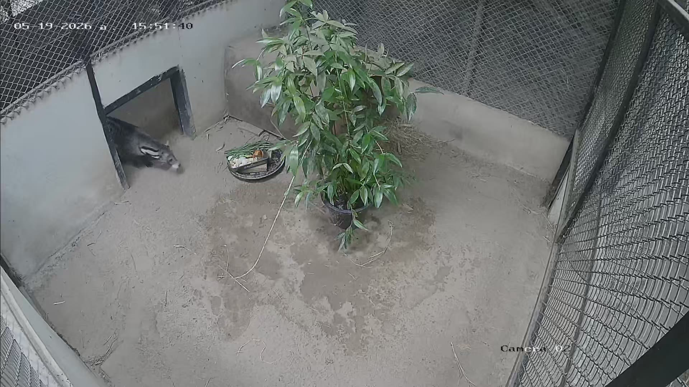
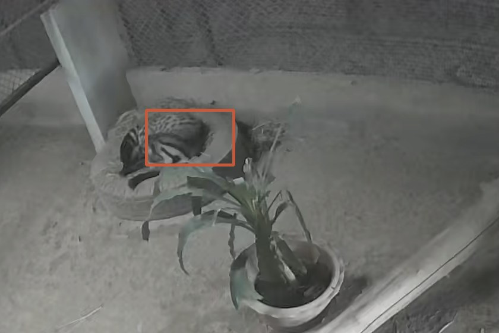

Short-clip behavior classification, detection and silhouette features for a zoo civet.

Why the project exists
The project setting from the brief: a civet enclosure observed by fixed cameras, day and night. Four rooms belong to one proposed monitoring context.

Three things a keeper watches for, and each one is a duration, not a snapshot.
Food-directed intake at the bowl. A drop in feeding time is an early signal.
Travel around the enclosure. Lethargy shows up as fewer and shorter bouts.
Sustained inactivity. Rest that crowds out the other two is also a signal.
A four-camera installation produces 96 hours a day. Hand review does not scale past a demonstration.
Three tasks from the brief, on the same footage, ending in one behavior timeline.
Two substitutions, both recorded
| Task | Brief path | What we built | Measured |
|---|---|---|---|
| Task 1 Classification |
Walking · Eating Resting · Climbing |
Five-second windows, three classes, one frame CNN over an ImageNet backbone | Macro F1 0.949 15 held-out windows |
| Task 2 Detection |
Video → frames → YOLO labels → train |
Labels from a per-clip background model. No hand-drawn box at any point | mAP50 0.537 animal found in 59% of frames |
| Task 3 Analysis |
Pose → keypoints → four features |
Silhouette geometry with the same four feature names | Macro F1 0.422 locked test windows |
The evidence base
Verified intervals. One model class covers the whole span, so a window is kept only when its label is unambiguous.
Dropped windows. 63 of 201: 46 not covered completely by one interval, 17 touching a Transition or Uncertain span.
Split by whole clip. No frame from a test clip ever appears in training.
Eight clips are the gold set and also the test split. Two people labelled them blind to each other, then reconciled.
0 abstentions. Accuracy over decided windows 0.933.
1 miss: an Eating window predicted Resting at 0.847.
Window 40–45 s
LABELLED Eating → PREDICTED Resting 0.847
The animal is partly hidden, and a still head over a bowl looks like rest.
The boundary sits close to the edge of the interval, and five seconds is a coarse window.
With one read of the test set, we cannot separate the two.
Locomotion has 2, and all 6 Resting windows come from one clip. A per-class score on that support is a baseline, not a stable estimate.
Every Resting window is Camera 03 and nearly all Eating is Camera 02. A score can come from the recording rather than the behavior.
0.949 describes these clips on these days. It is not an estimate of a new recording.
YOLO without annotation labour
Zero detections of the animal. One potted plant at 0.344.
Locks onto swaying foliage, which moves more than a resting civet.
40+ overlapping boxes, top score 0.535 on empty floor.
Keeps the animal and drops the foliage. 408 candidate boxes.
Median frame per clip, a per-pixel noise threshold, a component in an animal-size band, and a box must persist for about a second.
59% of held-out frames fire at confidence 0.25.
138 / 2355 of 10 audited held-out boxes were on the animal.

No keypoints, no pose model
| Feature | Eating | Locomotion | Resting |
|---|---|---|---|
| Body angle | 115° | 88° | 154° |
| Head angle | 113° | 49° | 96° |
| Movement speed | 17 px/s | 134 px/s | 2 px/s |
| Limb extent | 56 px | 148 px | 98 px |
A silhouette cannot tell a head from a tail, and a still animal joins the background.
$ python3 scripts/demo_all.py data/raw/Eating/25690519193422801.mp4 data/raw/Eating/25690519193422801.mp4 (50.0 s, 10 windows, abstain below 0.00) start end T1 conf T2 box via conf crop body head speed limb 0.00 5.00 Eating 0.73 408,462,606,528 motion 0.00 Eating 6 161 1 63 5.00 10.00 Eating 0.69 606,510,674,564 motion 0.37 Eating 25 16 23 52 10.00 15.00 Eating 0.69 632,472,700,550 motion 0.00 Eating 43 24 20 68 15.00 20.00 Eating 0.67 341,365,624,534 yolo 0.58 Locomotion 119 19 24 51 detection: 10/10 windows found the animal (6 by the trained detector, 4 by the per-clip model) full-frame and crop labels agree on 4/10 windows
Validation clip. Output trimmed to the header, four data rows and the two summary lines.
Video + conditions
clip · time · light · view
Five-second windows
Behavior per window, with a confidence
Box per frame, with a per-clip fallback when the detector is unsure
Body angle, head angle, speed, limb extent
Timeline + summaries
bouts · duration · counts
clip · start · end · behavior · confidence · conditions
Locomotion has 2 and Resting takes 6 from one clip. A per-class score on that support is a baseline.
A score can come from the recording rather than the behavior.
It fails on the 2026-05-20 recording day, absent from training, and fires on a bright plant.
No keypoints and no pose model. A still animal joins the median background, so most Resting windows have no features.
Seed 0 only. No run-to-run spread, so the split between score and seed is unknown.
And no human ground truth for detection: its quality is a counted visual audit, not mAP against truth.
Collect footage from sessions absent from training and repeat the evaluation, so the upper bound becomes an estimate.
Add Locomotion and Resting test clips from more than one clip per class before reading per-class differences.
Choose the abstain threshold on a larger validation set or a separate calibration set, never on the test windows.
Only if verified footage and keypoint labels exist. Until then, three classes and silhouette features are the scope.
A reproducible baseline that states what it measured and what it did not.